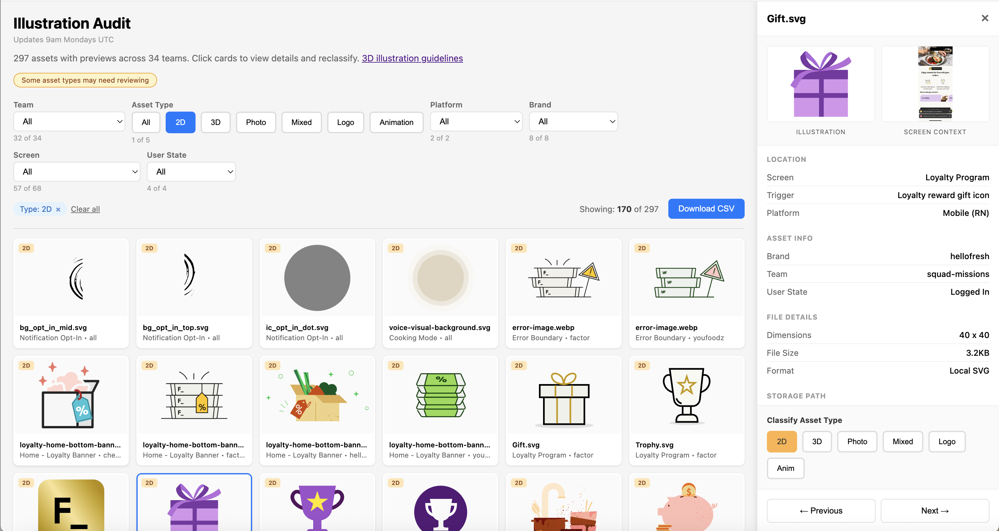

Done
- Audit complete
- Migration plan established
- Illustration request workflow set up in Jira
- ChatGPT prompts documented for consistent 3D generation
HelloFresh · Design Ops · 2026
An AI-assisted audit of 382 visual assets across 34 teams, with a migration plan from a 2D library to a unified 3D system.

01 · The problem
In mid-2025, HelloFresh defined a new 3D illustration style to modernise the brand. Rollout was slow to start. 34 teams across 8 brands had been storing and implementing their own illustrations. There was no centralised inventory, no clear ownership map, and assets lived in dozens of locations.
I was asked to help unblock the migration because of my experience bridging the design–engineering gap while embedded in engineering teams. I had strong relationships with developers and engineering managers, hands-on experience with multi-brand rollouts, and a track record of navigating complexity.
02 · The approach
The new 3D style was already established. New assets could be generated with a custom ChatGPT prompt. The hard part wasn't making art. It was finding all the places the old art lived.
An audit was needed to map and replace the old illustrations. I tested whether Claude Code could scale what would otherwise require weeks of tedious manual work. After some prototyping, I found it could search codebases for image files and be trained to recognise the difference between photos, 2D illustrations, and 3D illustrations, transforming an overwhelming migration into a systematic process.

03 · What we found
Claude Code searched for image asset file types across the codebase, then helped classify each one by content, size, location, platform, and team ownership.
382
Total assets audited
211
2D illustrations to replace163 web · 48 mobile
34
Teams across 8 brands
27
Animations needing rework

04 · From spreadsheet to tool
The CSV had the data, but I needed a way to see illustrations alongside their screens. Essential for helping teams recreate assets and review pull requests. Claude suggested an HTML site to share the audit with stakeholders.
Once built, an unexpected benefit emerged. I could spot misclassifications immediately. Some 3D illustrations had been tagged as 2D. Photos had been labelled as illustrations. Since I could customise the UI, I added a review feature so designers could reassign assets from their own teams. What started as a communication tool became an interactive platform for 34 teams to filter, review, and correct the data themselves.
The site also solved another problem. There had been no central repository. With illustrations scattered across teams and storage locations, maintaining consistency for common states required constant coordination. Now everyone had a single source of truth.

05 · Prioritisation
With the audit complete, I planned the cross-team migration. Prioritisation was based on impact and efficiency.
Design system components
6 assets · cascades automatically
Cross-platform concepts
19 assets · replace once, use everywhere
Logged-in screens
103 assets · the core experience
Logged-out pages
73 assets · acquisition
Since Claude had already identified each file's name, location, and owning team, it could handle the replacement. Teams could run the swap themselves, or I could open pull requests for them to review.
06 · Where it stands
Done
Next